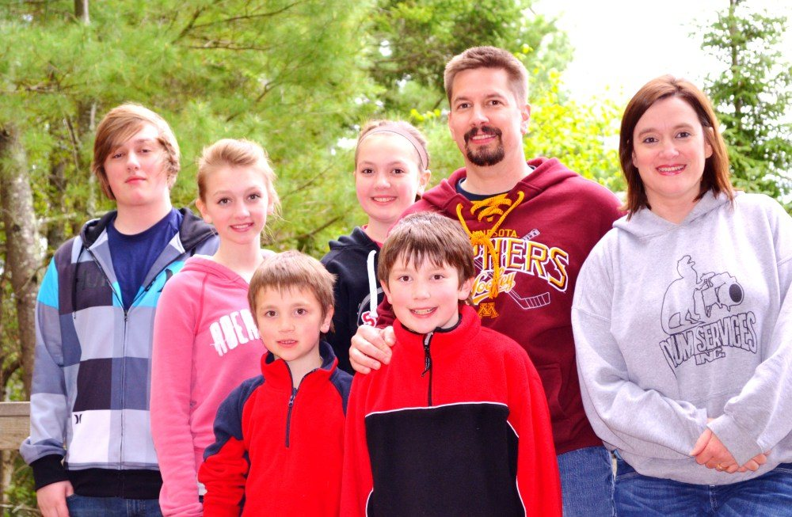

Finding Flannery
A travel memoir exploring the mystique of Southern Gothic writer Flannery O'Connor and the legacy she left us all.
The writing, speaking, and soul-conversations of Roxane B. Salonen — author, columnist, and host of Matters of Soul Importance, from the wide prairie of Fargo, North Dakota.
From a travel memoir on Flannery O'Connor to devotionals, prairie picture books, and companionship for hard roads — Roxane writes across the seasons of a reader's life.
A travel memoir exploring the mystique of Southern Gothic writer Flannery O'Connor and the legacy she left us all.

Consolation and hope for those carrying the cross of a loved one away from the Faith — with Patti Maguire Armstrong.

Daily devotions that meet Catholic women in the ordinary and call them, by name, toward grace.

A playful prairie Christmas for young readers, illustrated by Jess Golden.
Also by Roxane — P is for Peace Garden: A North Dakota Alphabet, First Salmon, and her newest children's titles. Find them all
For more than two decades, Roxane has spoken to women's groups, parishes, conferences, and writers' gatherings — weaving story, faith, and humor into talks that send people home lighter and more hopeful.
Finding grace in the ordinary, the writing life, the witness of Flannery O'Connor, motherhood, and walking with those whose loved ones have left the Faith.
New reflections most weeks — on faith, family, and the quiet drama of life on the Northern Plains.
Roxane's home for essays and soul-letters — subscribe to read along, "a portal of petals."
Read on SubstackHer long-running column bearing gentle, honest witness from the sidewalk and beyond.
Latest columnsThe travel memoir tracing Flannery O'Connor's Southern roads and enduring legacy.
About the bookHonest, warm conversations about the things that matter most — faith, family, calling, and grace — with Roxane and her guests.

By turns I'm a writer at the keyboard, a speaker at the podium, a radio and podcast host behind the mic — and, always, a mother in a busy prairie kitchen. The thread through all of it is the same: paying attention to the ordinary until it gives up its grace.
I write and speak from Fargo, North Dakota — the Peace Garden State — where the meadowlark sings and the wild rose blooms along the road.
Wife, and mother to the Salonen Seven.